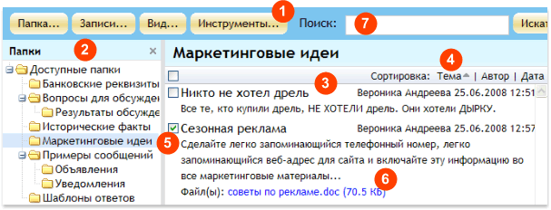
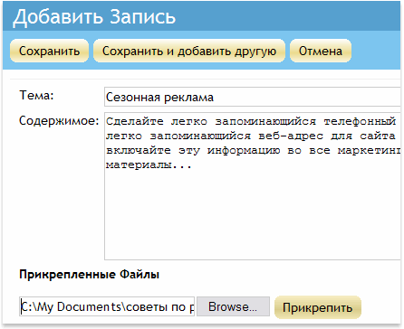
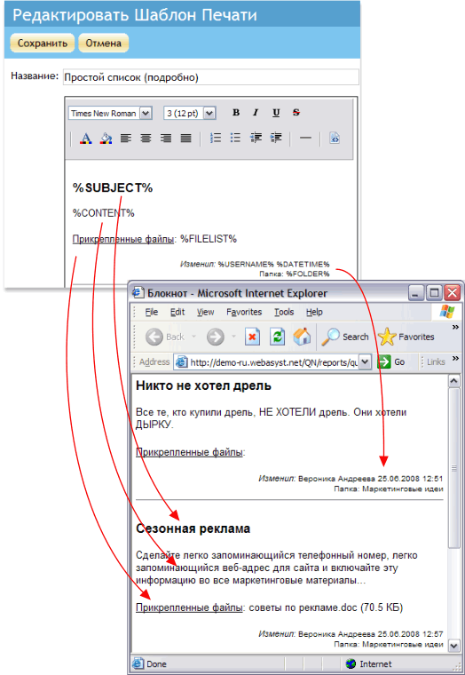

|
WebAsyst Блокнот одним взглядом
Так выглядит главное окно сервиса WebAsyst Блокнот:

- Панель инструментов: Щелкните по кнопке (Папка, Записи, Вид, Инструменты) чтобы открыть выпадающее меню для доступа к функциям добавления/изменения папок, добавления и работы с записями, настройками вида и т.д.
- Папки: Навигационная панель с деревом доступных папок. Щелкните по названию папки, чтобы открыть список сообщений, хранящихся в этой папке. Щелкните дважды, чтобы переименовать папку. Щелкните и потащите, чтобы скопировать или переместить папку в другую ветку. Щелкните кнопку Папка... в панели инструментов, чтобы добавить новую новую папку или настроить права доступа к текущей папке.
- Список записей: Показывает полный список сообщений в выбранной папке. Вы можете настроить видимые колонки в списке, используя кнопку Вид... в панели инструментов.
- Сортировка: Щелкните по слову "Тема", "Автор" или "Дата", чтобы отсортировать записи по соответствующему параметру. Щелкните еще раз для изменения порядка сортировки.
- Флажок выбора: Позволяет выбрать записи для массовых операций копирования/перемещения/удаления. Используйте кнопку Записи... в панели инструментов для вызова операции.
- Прикрепленные файлы: Вы можете прикреплять файлы к записям. Щелкните по ссылке в списке записей, чтобы открыть/скачать файл.
- Поиск: Введите ключевое слово или фразу (например, "реклама") и нажмите кнопку Искать. В результате поиска вам будет представлен список записей, в теме или теле которых встречается искомое слово.
|
|
|
Добавление записей
- Щелкните Записи... -> Добавить запись в панели инструментов.
- Введите тему записи, содержимое и, если необходимо, прикрепите файл(ы).
- Нажмите кнопку Сохранить для добавления записи и возвращения в список или кнопку Сохранить и добавить другую, чтобы продолжить добавление следующей записи.

|
|
|
Предоставление доступа к записям другим пользователям
Вы можете работать с блокнотом совместно с другими пользователями. Для каждой папки в вашей WebAsyst Почте вы можете предоставить один из следующих уровней доступа отдельным пользователям и/или группам пользователей:
- Чтение (Ч) – пользователь может открывать и просматривать записи и их свойства, а также прикрепленные к записям файлы
- Запись (З) – пользователь может создавать новые записи, а также изменять/перемещать/удалять существующие записи
- Полный (П) – пользователь может выполнять любые действия с записями, а также изменять свойства папки, создавать и настраивать вложенные папки
Для настройки доступа другим, щелкните Папка -> Настроить права доступа. Вы можете настроить права индивидуально для каждого на закладке Пользователи, или использовать закладку Группы для настройки прав для групп пользователей.
При установке прав доступа применяется комбинация персональных и групповых прав, как в примере ниже:
|
Персональные права
|
Групповые права
|
Результирующие права
|
|
-
|
Ч
|
Ч
|
|
Ч
|
ЧЗ
|
ЧЗ
|
|
ЧЗП
|
Ч
|
ЧЗП
|
ПРИМЕЧАНИЕ: Настраивать права может только такой пользователь, который имеет Полный (П) доступа к данной папке, а также доступ к секции Пользователи и Группы. |
|
|
Печать записей
Для представления ваших записей, объявлений, заметок в подготовленном для печати виде, щелкните Записи... -> Печать в панели инструментов. Выберите что вы хотите распечатать, а также шаблон печать и нажмите кнопку Печать.
Подготовленная для печати страница откроется в новом окне. |
|
|
Использование шаблонов печати
Шаблоны печати позволяют управлять видом страницы со списком записей, подготовленной для печати. Щелкните Инструменты... -> Шаблоны печати в панели инструментов, чтобы открыть список доступных шаблонов. Тело каждого шаблона содержит переменные, или иными словами такие ключевые слова, которые соответствуют тем или иным компонентам записей: тема, текст записи, имена вложенных файлов, автор и т.д.
Во время печати переменные заменяются на реальные значения из самих записей, как показано на рисунке ниже:

Чтобы создать новый шаблон, нажмите кнопку Добавить шаблон. Введите имя шаблона, после чего используйте простой встроенный HTML-редактор для разметки самого шаблона. |
|
|
Организация и работа с записями
Записи организованы в папки и подпапки. Щелкните "Доступные папки" в панели Папки, чтобы отобразить полный список доступных папок. Для каждой записи вы увидите свои права доступа, количество записей хранящихся в данной папке и флажок "Общая" для тех папок, которые доступны другим пользователям.
Щелкните по названию папки, чтобы перейти в нее. В зависимости от ваших прав в данной папке, вы можете создавать новые записи, копировать/перемещать/удалять записи, или создавать новые вложенные папки, копировать/перемещать/удалять текущую или вложенные папки, а также настраивать права доступа другим пользователями к данной папке или подпапкам.
Основные доступные операции с папками и записями описаны ниже. |
|
|
Папки
Чтобы добавить новую папку, щелкните Папка... -> Добавить в панели инструментов и введите имя новой папки. Новая папка будет добавлена как вложенная в текущую. Если вы хотите создать корневую папку, то прежде перейдите в ветку "Доступные папки" и затем щелкните Папка... -> Добавить в панели инструментов.
Для копирования или перемещения папки, перейдите в нужную папку и просто потащите ее в новое место в дереве папок, или используйте команды Папка... -> Копировать/Переместить в панели инструментов.
Для удаления папки используйте команду Папка... -> Удалить.
ПРИМЕЧАНИЕ: Вы должны иметь уровень прав П (Полный) в той папке, к которой вы хотите применить действие удаления, перемещения или создания новой папки.
|
|
|
Копирование/Перемещение/Удаление записей
Чтобы скопировать или переместить записи, прежде выберите их в списке, затем щелкните Записи... -> Скопировать запись(и) (или Переместить запись(и)) в панели инструментов. Выберите папку, в которую вы хотите поместить записи и нажмите кнопку Сохранить.
Для удаления записей, выберите их в списке и щелкните Записи... -> Удалить запись(и) в панели инструментов. |
|
|
Настройка вида
Щелкните Вид... -> Таблица для отображения записей в табличном формате. Щелкните Вид... -> Настроить вид, чтобы установить видимые колонки, количество записей на одной странице и количество видимых символов в одной записи.
Щелкните Вид... -> Список для представления полного содержимого записей и их свойств таким образом, чтобы текст записи занимал всю ширину окна. |
|